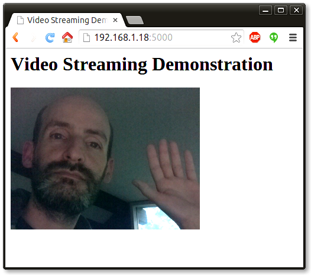

2014-10-20T04:02:03Z
Video Streaming with Flask
I'm sure by now you know that I have released a book and a couple of videos on Flask in cooperation with O'Reilly Media. While the coverage of the Flask framework in these is fairly complete, there are a small number of features that for one reason or another did not get mentioned much, so I thought it would be a good idea to write articles about them here.
This article is dedicated to streaming, an interesting feature that gives Flask applications the ability to provide large responses efficiently partitioned in small chunks, potentially over a long period of time. To illustrate the topic I'm going to show you how to build a live video streaming server!
What is Streaming?
Streaming is a technique in which the server provides the response to a request in chunks. I can think of a couple of reasons why this might be useful:
- Very large responses. Having to assemble a response in memory only to return it to the client can be inefficient for very large responses. An alternative would be to write the response to disk and then return the file with
flask.send_file(), but that adds I/O to the mix. Providing the response in small portions is a much better solution, assuming the data can be generated in chunks. - Real time data. For some applications a request may need to return data that comes from a real time source. A pretty good example of this is a real time video or audio feed. A lot of security cameras use this technique to stream video to web browsers.
Implementing Streaming With Flask
Flask provides native support for streaming responses through the use of generator functions. A generator is a special function that can be interrupted and resumed. Consider the following function:
def gen():
yield 1
yield 2
yield 3
This is a function that runs in three steps, each returning a value. Describing how generator functions are implemented is outside the scope of this article, but if you are a bit curious the following shell session will give you an idea of how generators are used:
>>> x = gen()
>>> x
<generator object gen at 0x7f06f3059c30>
>>> x.next()
1
>>> x.next()
2
>>> x.next()
3
>>> x.next()
Traceback (most recent call last):
File "<stdin>", line 1, in <module>
StopIteration
You can see in this simple example that a generator function can return multiple results in sequence. Flask uses this characteristic of generator functions to implement streaming.
The example below shows how using streaming it is possible to generate a large data table, without having to assemble the entire table in memory:
from flask import Response, render_template
from app.models import Stock
def generate_stock_table():
yield render_template('stock_header.html')
for stock in Stock.query.all():
yield render_template('stock_row.html', stock=stock)
yield render_template('stock_footer.html')
@app.route('/stock-table')
def stock_table():
return Response(generate_stock_table())
In this example you can see how Flask works with generator functions. A route that returns a streamed response needs to return a Response object that is initialized with the generator function. Flask then takes care of invoking the generator and sending all the partial results as chunks to the client.
For this particular example if you assume Stock.query.all() returns the result of a database query as an iterable, then you can generate a potentially large table one row at a time, so regardless of the number of elements in the query the memory consumption in the Python process will not grow larger and larger due to having to assemble a large response string.
Multipart Responses
The table example above generates a traditional page in small portions, with all the parts concatenated into the final document. This is a good example of how to generate large responses, but something a little bit more exciting is to work with real time data.
An interesting use of streaming is to have each chunk replace the previous one in the page, as this enables streams to "play" or animate in the browser window. With this technique you can have each chunk in the stream be an image, and that gives you a cool video feed that runs in the browser!
The secret to implement in-place updates is to use a multipart response. Multipart responses consist of a header that includes one of the multipart content types, followed by the parts, separated by a boundary marker and each having its own part specific content type.
There are several multipart content types for different needs. For the purpose of having a stream where each part replaces the previous part the multipart/x-mixed-replace content type must be used. To help you get an idea of how this looks, here is the structure of a multipart video stream:
HTTP/1.1 200 OK
Content-Type: multipart/x-mixed-replace; boundary=frame
--frame
Content-Type: image/jpeg
<jpeg data here>
--frame
Content-Type: image/jpeg
<jpeg data here>
...
As you see above, the structure is pretty simple. The main Content-Type header is set to multipart/x-mixed-replace and a boundary string is defined. Then each part is included, prefixed by two dashes and the part boundary string in their own line. The parts have their own Content-Type header, and each part can optionally include a Content-Length header with the length in bytes of the part payload, but at least for images browsers are able to deal with the stream without the length.
Building a Live Video Streaming Server
There's been enough theory in this article, now it is time to build a complete application that streams live video to web browsers.
There are many ways to stream video to browsers, and each method has its benefits and disadvantages. The method that works well with the streaming feature of Flask is to stream a sequence of independent JPEG pictures. This is called Motion JPEG, and is used by many IP security cameras. This method has low latency, but quality is not the best, since JPEG compression is not very efficient for motion video.
Below you can see a surprisingly simple, yet complete web application that can serve a Motion JPEG stream:
#!/usr/bin/env python
from flask import Flask, render_template, Response
from camera import Camera
app = Flask(__name__)
@app.route('/')
def index():
return render_template('index.html')
def gen(camera):
while True:
frame = camera.get_frame()
yield (b'--frame\r\n'
b'Content-Type: image/jpeg\r\n\r\n' + frame + b'\r\n')
@app.route('/video_feed')
def video_feed():
return Response(gen(Camera()),
mimetype='multipart/x-mixed-replace; boundary=frame')
if __name__ == '__main__':
app.run(host='0.0.0.0', debug=True)
This application imports a Camera class that is in charge of providing the sequence of frames. Putting the camera control portion in a separate module is a good idea in this case, this way the web application remains clean, simple and generic.
The application has two routes. The / route serves the main page, which is defined in the index.html template. Below you can see the contents of this template file:
<html>
<head>
<title>Video Streaming Demonstration</title>
</head>
<body>
<h1>Video Streaming Demonstration</h1>
<img src="{{ url_for('video_feed') }}">
</body>
</html>
This is a simple HTML page with just a heading and an image tag. Note that the image tag's src attribute points to the second route of this application, and this is where the magic happens.
The /video_feed route returns the streaming response. Because this stream returns the images that are to be displayed in the web page, the URL to this route is in the src attribute of the image tag. The browser will automatically keep the image element updated by displaying the stream of JPEG images in it, since multipart responses are supported in most/all browsers (let me know if you find a browser that doesn't like this).
The generator function used in the /video_feed route is called gen(), and takes as an argument an instance of the Camera class. The mimetype argument is set as shown above, with the multipart/x-mixed-replace content type and a boundary set to the string "frame".
The gen() function enters a loop where it continuously returns frames from the camera as response chunks. The function asks the camera to provide a frame by calling the camera.get_frame() method, and then it yields with this frame formatted as a response chunk with a content type of image/jpeg, as shown above.
Obtaining Frames from a Video Camera
Now all that is left is to implement the Camera class, which will have to connect to the camera hardware and download live video frames from it. The nice thing about encapsulating the hardware dependent part of this application in a class is that this class can have different implementations for different people, but the rest of the application remains the same. You can think of this class as a device driver, which provides a uniform implementation regardless of the actual hardware device in use.
The other advantage of having the Camera class separated from the rest of the application is that it is easy to fool the application into thinking there is a camera when in reality there is not, since the camera class can be implemented to emulate a camera without real hardware. In fact, while I was working on this application, the easiest way for me to test the streaming was to do that and not have to worry about the hardware until I had everything else running. Below you can see the simple emulated camera implementation that I used:
from time import time
class Camera(object):
def __init__(self):
self.frames = [open(f + '.jpg', 'rb').read() for f in ['1', '2', '3']]
def get_frame(self):
return self.frames[int(time()) % 3]
This implementation reads three images from disk called 1.jpg, 2.jpg and 3.jpg and then returns them one after another repeatedly, at a rate of one frame per second. The get_frame() method uses the current time in seconds to determine which of the three frames to return at any given moment. Pretty simple, right?
To run this emulated camera I needed to create the three frames. Using gimp I've made the following images:
Because the camera is emulated, this application runs on any environment, so you can run this right now! I have this application all ready to go on GitHub. If you are familiar with git you can clone it with the following command:
$ git clone https://github.com/miguelgrinberg/flask-video-streaming.git
If you prefer to download it, then you can get a zip file here.
Once you have the application installed, create a virtual environment and install Flask in it. Then you can run the application as follows:
$ python app.py
After you start the application enter http://localhost:5000 in your web browser and you will see the emulated video stream playing the 1, 2 and 3 images over and over. Pretty cool, right?
Once I had everything working I fired up my Raspberry Pi with its camera module and implemented a new Camera class that converts the Pi into a video streaming server, using the picamera package to control the hardware. I will not discuss this camera implementation here, but you can find it in the source code in file camera_pi.py.
If you have a Raspberry Pi and a camera module you can edit app.py to import the Camera class from this module and then you will be able to live stream the Pi camera, like I'm doing in the following screenshot:

If you want to make this streaming application work with a different camera, then all you need to do is write another implementation of the Camera class. If you end up writing one I would appreciate it if you contribute it to my GitHub project.
Limitations of Streaming
When the Flask application serves regular requests the request cycle is short. The web worker receives the request, invokes the handler function and finally returns the response. Once the response is sent back to the client the worker is free and ready to take on another request.
When a request that uses streaming is received, the worker remains attached to the client for the duration of the stream. When working with long, never ending streams such as a video stream from a camera, a worker will stay locked to the client until the client disconnects. This effectively means that unless specific measures are taken, the application can only serve as many clients as there are web workers. When working with the Flask application in debug mode that means just one, so you will not be able to connect a second browser window to watch the stream from two places at the same time.
There are ways to overcome this important limitation. The best solution in my opinion is to use a coroutine based web server such as gevent, which Flask fully supports. With the use of coroutines gevent is able to handle multiple clients on a single worker thread, as gevent modifies the Python I/O functions to issue context switches as necessary.
Conclusion
In case you missed it above, the code that supports this article is this GitHub repository: https://github.com/miguelgrinberg/flask-video-streaming. Here you can find a generic implementation of video streaming that does not require a camera, and also an implementation for the Raspberry Pi camera module.
I hope this article shed some light on the topic of streaming. I concentrated on video streaming because that is an area I have some experience, but streaming has many more uses besides video. For example, this technique can be used to keep a connection between the client and the server alive for a long time, allowing the server to push new information the moment it becomes available. These days the Web Socket protocol is a more efficient way to achieve this, but Web Socket is fairly new and works only in modern browsers, while streaming will work on pretty much any browser you can think of.
If you have any questions feel free to write them below. I plan to continue documenting more of the not well known Flask topics, so I hope you connect with me in some way to know when more articles are published. I hope to see you in the next one!
Miguel
#1 pypy said 2014-10-21T02:48:28Z
Great!!!
#2 dorian said 2014-10-23T12:15:04Z
What would you suggest is the best open-source platform/script/server for streaming video ?
#3 Miguel Grinberg said 2014-10-23T14:45:50Z
@dorian: tough question to answer, as there are many factors that affect your decision. If you want to stream pre-recorded video then the problem gets simplified enormously, you can just use ffmpeg to encode your video as an HLS stream or other adaptive bitrate formats. These are nice because for each client the most appropriate quality/bitrate is served dynamically. For live video the adaptive bitrate formats have a few seconds of latency, so if the goal is to reduce latency at the cost of quality then a Motion-JPEG solution similar to what I present in this article is a good idea.
#4 dorian again said 2014-10-23T15:03:21Z
@miguel: true with hls and just use nginx or whatever, but adaptive-streaming is also required for browsers/players that don't support HLS.
#5 Miguel Grinberg said 2014-10-23T16:40:05Z
@dorian: HLS and similar methods basically push most of the complexity to the client, so you can only stream to clients that understand how to work with adaptive bitrate streams. HLS is supported natively by the browsers in iOS and Android. On the desktop some browsers need a third-party Javascript library. Also HLS, backed by Apple, is not the only adaptive bitrate format, there are a few more from Microsoft, Adobe, and others.
#6 Jos M. Alonso said 2014-10-24T12:04:03Z
Great Thanks, Miguel. I am already watching at work images sent by my Raspberry Pi from my home, only a problem: the images are inverted. I would appreciate vey much a suggestion. Jose
#7 Miguel Grinberg said 2014-10-24T14:45:24Z
@Jos: look in "camera_pi.py", I have flip vertical and horizontal settings there. Just revert them and you will be fine.
#8 Jose M Alonso said 2014-10-27T16:28:08Z
Thanks again. It works perfectly now! Let me ask you an additional question. Could it be possible to control the access of browsers to the video streaming?
#9 Miguel Grinberg said 2014-10-27T17:05:21Z
@Jose: sure, you can apply standard authentication/authorization techniques to control access to the stream. See my tutorials in this blog for more information.
#10 cyber_lis said 2014-10-29T08:22:26Z
Can you show example of streaming of pre-recorded video?
#11 Miguel Grinberg said 2014-10-29T17:18:40Z
@cyber_lis: to stream pre-recorded video you can just serve the video file as a regular file. You can encode it as mp4 with ffmpeg, for example, or if you want something more sophisticated you can encode a multi-resolution HLS stream. Either way you just need to serve the static files, you don't need Flask for that.
#12 Thomas Sarmis said 2014-11-17T17:56:11Z
I altered the app.run(host='0.0.0.0', port=80, debug=False) but still I am only capable of getting at most one stream at a time. Am I missing something here? - Shouldn't this change make more than one feed's possible? (I am running the app with sudo python app.py)
#13 Miguel Grinberg said 2014-11-17T18:49:34Z
@Thomas: this is explained in the section "Limitations of Streaming" above. If you have one worker then you can only serve one client at a time. You can run the application under Gunicorn for example, and specify a number of worker processes, or go with gevent as I suggest in the article.
#14 Thomas said 2014-11-18T18:05:54Z
@Miguel In the article it states that: "When working with the Flask application in debug mode that means just one, so you will not be able to connect a second browser window to watch the stream from two places at the same time." My understanding was that setting debug = False would allow for more worker threads and thus more connections. What am I missing here? (I will also check the Gunicon/Gevent solutions, but I m unfamiliar with linux and python so I was looking to setup something simple first...)
#15 Miguel Grinberg said 2014-11-20T00:44:03Z
@Thomas: I meant "debug mode" as in "not production". When you run in production you have a web server with a few workers, or else gevent, which can handle multiple clients with a single worker. Werkzeug is not meant to be used for production, though there is an option to run it in multi-threaded mode that may allow it to handle multiple clients with streaming video. This is enabled by calling app.run(threaded=True).
#16 Thomas said 2014-11-20T20:10:59Z
Yeah, I kinda guess that, from searching around yesterday - I also tried gevent/gunicorn, but I have run into two major problems (A) A single camera access thread must be used and then share the buffers to all clients (B) I am not sure that the worker per client approach is the best one in this case - I am thinking of something like single thread with multiple tcp connection and a for loop to try to send each image to every client and then move forward... Anyway your post was extremely usefull in understanding flash and streaming... Thank you
#17 Miguel Grinberg said 2014-11-21T06:27:53Z
@Thomas: (A) The camera class creates a single background thread. See here: https://github.com/miguelgrinberg/flask-video-streaming/blob/master/camera_pi.py#L14. (B) That is what gevent more or less does through coroutines. You could build something custom that does what you describe, but then you are going to have trouble using Flask, which assumes a WSGI environment.
#18 Thomas said 2014-11-21T15:31:00Z
(A) You are right, I supposed that managed to misuse gevent and i got a camera resources error. In Flask (theaded=True) works fine (B) I am building a small baby monitor app and I am assuming no more that 2-6 clients. Since Flash works OK with that, I don't need production quality software for the initial version Thank you again...
#19 Miguel Grinberg said 2014-11-23T00:28:40Z
@Thomas: excellent, glad to know threaded=True works. I completely agree, by the way, if this is going to be a small server for your family I would also take the least pain route, I don't see any problems with using the threaded Werkzeug if it gets the job done.
#20 Marcel Maré said 2014-12-07T19:34:28Z
Thanks Miguel. This has been very helpful to me. I was surprised how well it works with the Pi camera. Especially since I've tried a lot of linuxy or javascript solutions, but they have much longer latency. With the threaded=True is also works for multiple streams. Very nice. I'd appreciate another tutorial expanding on Flask+gevent+streaming. Thanks again!
#21 Miguel Grinberg said 2014-12-08T17:30:08Z
@Marcel: the drawback of this method versus others is video quality, which is inferior to other streaming methods that have longer latencies. To use gevent there are no code changes required, you just need to "pip install gevent" and launch the server as shown in the flask official documentation: http://flask.pocoo.org/docs/0.10/deploying/wsgi-standalone/#gevent.
#22 Eduardo said 2014-12-18T12:40:39Z
Hi Miguel, Thanks for this great article. I'd like to ask how about having the camera class reading from remote cameras. I want to read from remote cameras and serve their feeds through my streaming server like an CCTV application. Thanks very much
#23 Log0 said 2014-12-18T13:12:40Z
Hi Miguel, what are the specifics that I'm missing to get this to work? Your jpeg works but using this implementation shows a "broken image" icon. I'm trying to make a real simple webcam video streaming (cv2.VideoCapture), but currently using just a simple video as a replacement for testing. class Camera(object): def __init__(self): self.video = cv2.VideoCapture('video.mp4') def __del__(self): self.video.release() def get_frame(self): success, image = self.video.read() if not success: print 'Failing' image_bytes = image.tobytes() return image_bytes Thanks.
#24 Miguel Grinberg said 2014-12-19T06:56:01Z
@Eduardo: you can write a camera class to get the video frames in any way, even by talking to a remote camera. But I'm not sure this is a good idea, you can also serve the HTML page with code that contacts the remote camera directly and save the extra trip to the Pi.
#25 Miguel Grinberg said 2014-12-19T06:57:43Z
@Log0: you need to return jpeg images, that is the only format supported in a MJPEG stream. I suspect those bytes that you are returning are an uncompressed image buffer. You just need to turn that into a jpeg.